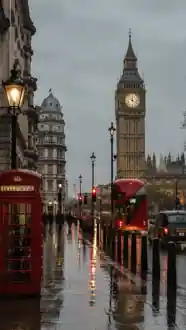
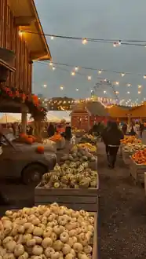
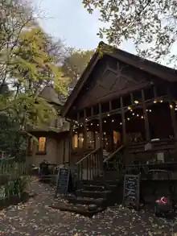
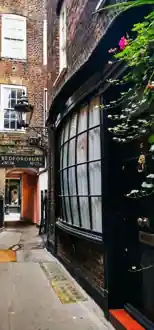

Le carnet
Tout le voyage, au même endroit.
01 · ♡
Les voyageurs
ouvrir →02 · 🚆Les trajets
ouvrir →03 · 🍂Les activités
ouvrir →04 · 🗓️Les journées
ouvrir →05 · 🏠Le logement
ouvrir →06 · £Le budget
ouvrir →✨ Important : les six rubriques principales ont chacune leur propre page. Les trajets ne renvoient plus aux journées et le logement a sa propre rubrique.
📸 LONDON · OCTOBER 2026
Quelques images pour se projeter.
Les photos de ton moodboard sont maintenant directement visibles depuis l’accueil — pas besoin de chercher la bonne sous-page. 🍂☕️🇬🇧




Les bonus du carnet